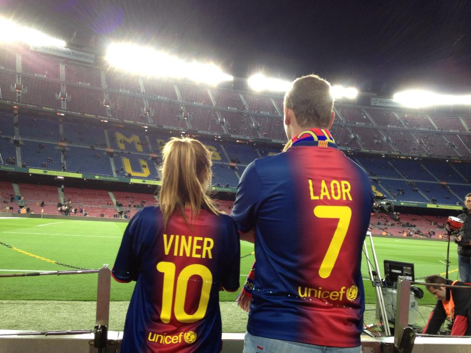

↑
Barcelona!
Barcelona is the capital and largest city of Catalonia and Spain's second largest city, with a population of over one and half million people (over five million in the whole province).
This city, located directly on the northeastern Mediterranean coast of Spain, has a rich history, having been under Roman, then Frank law before declaring its independence.
In 1992, Barcelona gained international recognition by hosting the Olympic games which brought a massive upturn in its tourism industry.
This had the effect of changing the city in ways that are still felt today with neighbourhoods renovated (and in some cases leveled) and the intense focus of modern design permeating all aspects of life in Barcelona from public buildings to something as simple as a park bench or an event poster.
For visitors, this has translated into the very modern, yet incredibly old city you see now in the 21st century, where the new elements work to both preserve and celebrate the ancient.
This beautiful city is full of what European cities are known for (outdoor markets, restaurants, shops, museums and churches) and is fantastic for walking with an extensive and reliable Metro system for more far-flung destinations. The core centre of town, focused around the Ciutat Vella ("Old City") provides days of enjoyment for those looking to experience the life of Barcelona while the beaches the city was built upon provide sun and relaxation during the long periods of agreeably warm weather.
